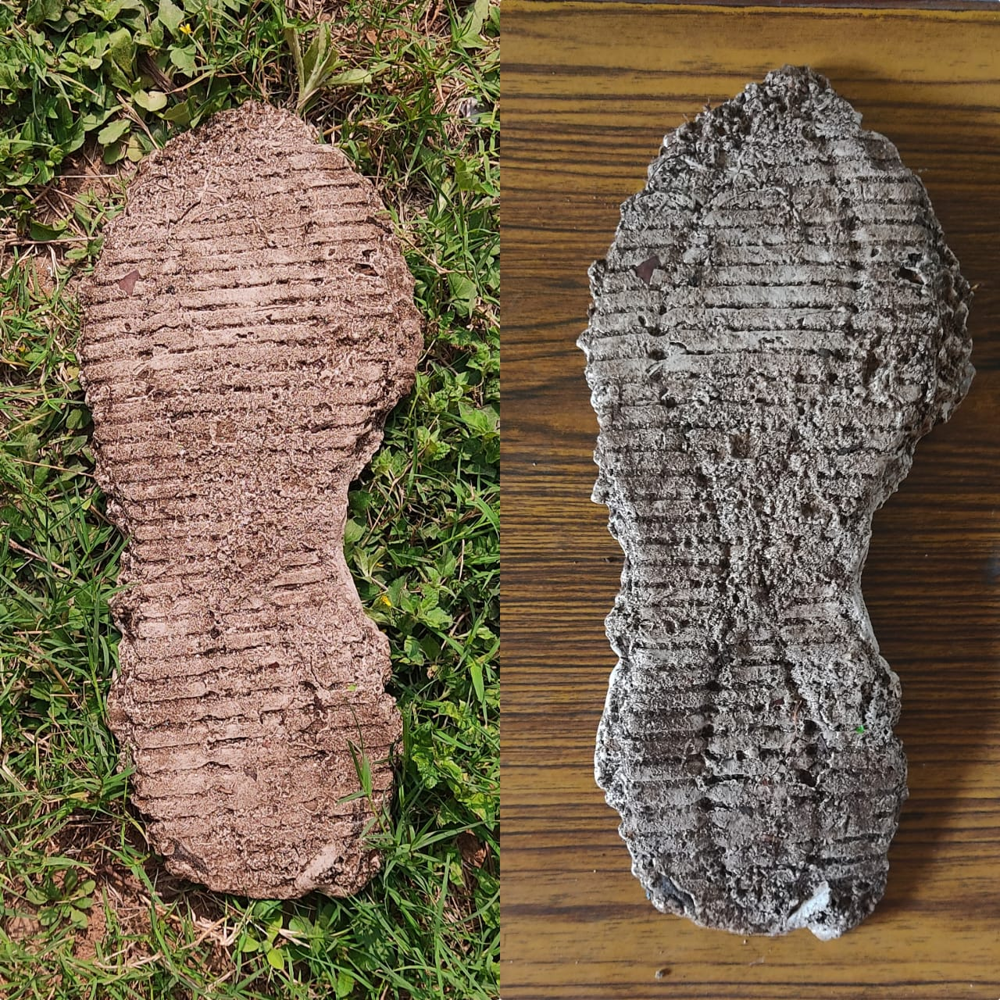

To cast plastic impressions of footprint
Shoe imprint on sand or dirt.
A. Plaster of Paris
B. Fixative such as hair spray or dust hardeners.
C. Water
All glassware and plastic ware used should be sterilized:
Any three-dimensional impression created by our feet or the footwear we wear can be collected by casting and preserved as physical evidence for forensic records.
The imprints left by a person walking are referred to as footprints. They are extremely important in the forensic investigation of a crime scene. They aid in the identification of all the people who were present during the conduct of a crime. Footprint traces are collected and 3D images of the footprints are used for further analysis.
There are three basic categories of impressions present in footprints:
These are two-dimensional impressions that are invisible to the naked eye, produced when minute debris such as oil, fine soil, etc. is transferred from an object and deposited onto a clean floor. They can be made visible by dusting, electrostatic techniques or chemicals.
These are two-dimensional visible impressions produced when materials are transferred from an object and deposited onto a hard flat surface.
Plastic impressions are three-dimensional, visible imprints produced when an object, in this case the sole of a shoe, is pressed into soft materials such as mud, sand or snow.
Depending on where an imprint has been left in, the material used for their casting varies as follows:
Plaster of Paris chemically known as calcium sulphate hemihydrate is a fine white powdery, quick setting gypsum plaster. When moistened and allowed to dry, gypsum crystals are formed causing it to achieve a solid state. While hardening plaster expands then contracts slightly before solidifying completely. This property of plaster of Paris makes it ideal for making moulds and casts.
Before casting of the impressions is performed, fixatives like dust hardeners and hair spray, are sprayed into the impression to stabilize it during the pouring of the casting material.
Click here to perform the simulation

Shoe imprints are very handy in forensic analysis. Much information can be obtained from a shoe imprint, such as: